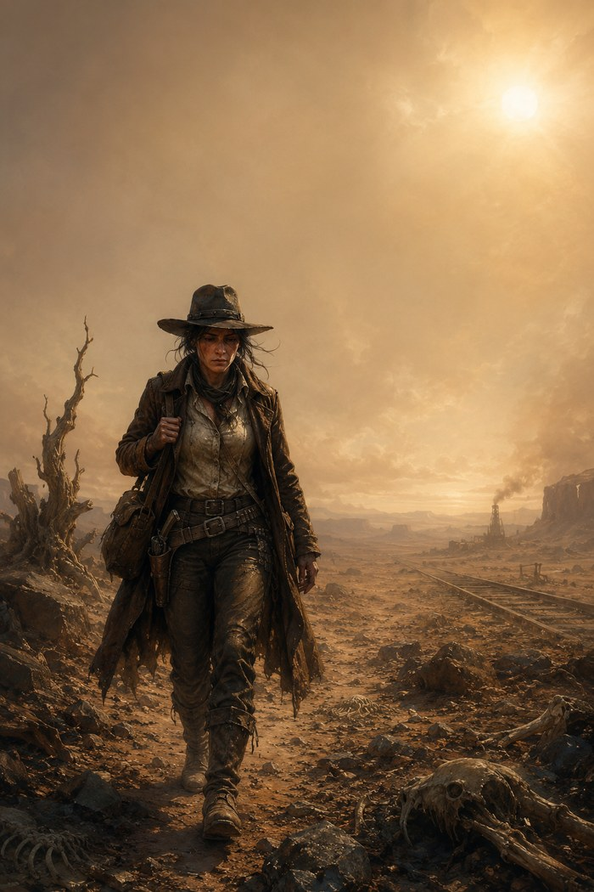
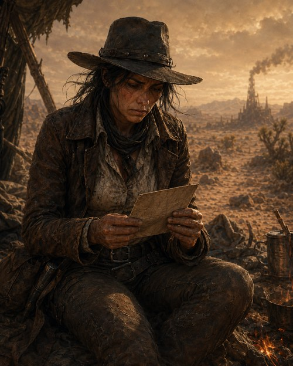
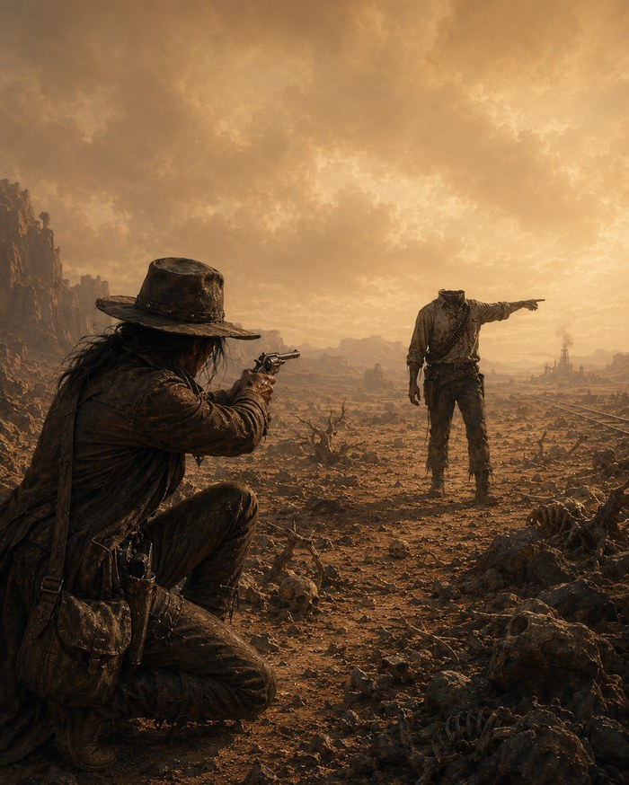

Tales of the Astlands
Stories that follow people the party crossed paths with, off on their own roads — true to the world, even though none of it happened at the table.

Jane
Jane gave the party directions to the goblin camp in Session 2 and hasn't been seen since. She left with one round in Caleb's revolver, a debt of vengeance she'd rather forget, and a long walk to Inis Town ahead of her. This is where she went after — what the Baron's men took from her, what found her alone in the desert, and a memory of a chamber beneath the sand her family uncovered long before any of this began.
▸Jane's Storytrue to the world, never played
They're gonna get themselves killed.
Jane watched the strangers with blurred curiosity as they walked away from her small camp towards the Rabbit Rock Mountains. At first glance, they didn't seem like much. There were seven of them, an unlikely band consisting of two humans, two elves, a tanuki, a vanaran, and the biggest minotaur she had ever seen, not that she had seen many in her life, she thought they didn't branch far out from the Mountains. One of the humans, an older gentlemen with a surprisingly well to-do beard, was tied by the wrists. Prisoner, she suspected. It further demonstrated their experience, and she remembered an old saying: never start one job when another needs finishing. Shame. The elf girl was sweet.
She had given them directions. They were looking for the band of goblins that came galloping by a day or so ago. Was it a day? Maybe two? She wasn't sure, she had been drinking. These strangers didn't seem to know how large this horde was, or that they had pyros. Oh well, she thought, they'll know soon enough.

She took the charcoal drawing of her, Caleb and Joshua out of her pocket and stared at it for a while. Though black and white, she could see the beautiful blue of her husband's eyes, and the flecks of white in the hair at his temples. She could see the wonderful, golden, brown mop of Joshua and his favourite dark green shirt. She had bought that shirt from a merchant for his birthday.
It had only been a week or so since the Baron's men had been waiting in ambush and accused them of magery. They said they had seen magical energy from afar and because her and her family were the only ones out here for miles, it stood to reason they were the source. It was just an excuse, those men had been out in the wastes too long, too bored and wanted some fun. That fun ended with Caleb and Joshua dead. Now there was only her. She raised the pistol to her eyes. It was Caleb's, not that he really knew how to use it. He took a few shots at the men before they brought him down, and before she was able to draw her own rifle she was struck in the back of the head. They didn't take it when they left her boys in the sand, they didn't take anything at all, though they did break her rifle. They didn't even have the decency to kill her. Leaving her alive was their cruel joke. Their leader, a grey haired man with a matching moustache, dressed in all black, even taunted her into finding her revenge in the future. She opened the chamber. One round left. She was interrupted by those strangers and forgotten all about it. Silly, sweet elf girl. She placed the pistol back in her satchel.
She had decided to head south to Inis Town to see what work she could find. Jimmy, who worked at The Guilty Noose, was an old friend of hers, and the tavern itself was where caravanners would rest after making the journey through Dreadmere Marsh. She would ask him if there was anyone looking for extra muscle and to put in a good word for her. Work will keep me occupied. She had given up bodyguard work when she met Caleb. He was the cleverest man she had ever met. He knew all sorts of things, from history of the world before the Devastation, to the creatures that roamed the wasteland. With his brain and her brawn, they felt there was nothing the Blighted West could send their way they couldn't handle. She thought of Caleb pleading for his family to be spared. She thought of Joshua lying on the floor, skull broken by a boot.
She walked early mornings, found shade at high noon when she could, walked until the sun went down. The heat of the sun bellowed down on her that it was all she could think about. She was pleased for it. Her shirt wrapped tight around her chest and back with sweat, and the leather coat and trousers had begun to chaff. The soles of her boots were thinning on the inside, and she could feel each blister swell and burst with each step. Only a day or so from Inis, she powered on. Only a day.
Jane wanted to find the tracks of the Baron's train, The Desert Rose, and follow them all the way to Inis Town. So long as she stuck to the tracks, she couldn't miss it. She lost herself in her thoughts of her family, watching her feet take step after step. It was in this haze she heard a voice, a whisper on the dusty wind.
"We can stop him. Van Owen. We can avenge them. We can avenge me."
It was as though she could feel breath on her ear. She swung around to find no one there. Then, in the distance, she saw a figure standing on the horizon, marching closer towards her.

Jane reached for Caleb's gun. The drinking and the lack of sleep caused her to slow and fumble it from her bag. She eventually aimed it at the figure, shaking. It was impossibly close now, no one could get that close in that short space of time. The figure wore a tattered cotton shirt with a gunslinger's bandolier over its left shoulder wrapping round its chest. Its leather trousers were torn and its boots looked much like hers. She could see its arms had been wounded, and bullet holes decorated its shirt. "Just to let you know" She bellowed. "I've just about had the worst week any soul could have, and so I'm on my last fuckin' thread of patience. You take one more fuckin' step, I'll fill your fuckin' stomach so full of blackpowder every time you shit it'll feel like taking pop shots at the local rhizan." The figure didn't move. "You hear me? You get that through your thick sku-" that's when Jane noticed.. She could now see a neck, but the figure was missing its head. She kept the gun levelled at it, but didn't say anything more. After a few moments, the figure raised its arm, pointing out into the desert. She got the impression it was telling her to go somewhere. Jane crouched then sat firmly on the ground, still aiming the gun. It wasn't coming towards her and would have probably done so by now if it wanted to, but she was not about to go and take a look at what this thing wanted her to see. No sir, you can point all day if you want. I'm getting out of here.
She heard the sound of a Roc flying overhead and took her eyes off the figure for a split second. When she looked back, the headless figure was gone.
"I hate the fuckin' desert." She sighed, lowered her gun and continued to trek across the wasteland alone.
As the sun finally went down, and not a moment too soon, Jane had found the tracks she had been looking for and followed them until she found a hollow in the canyon wall where the tracks cut through. She settled down and took out her water-skin. The leather was deep green, and the glass stopper gleamed purple in the light.
"Stream" she said as she pulled the stopper free. Water began to flow incessantly from the spout, spilling all over her leathers. "Godsdammit!" Jane quickly pressed the water skin to her lips. She never did get the hang of using this thing. She then made a fire and took out the crock-pot. "Stew" and almost instantly at the sound of the word, the crock-pot is filled with vegetables and broth, giving off the most wonderful smell. She reached into her bag and pulled out the bottle of whiskey. As she watched the fire, she remembered the day Joshua stumbled upon these wonders. They were crossing the desert on foot, trying to keep a wide berth of a swarm of ankhrav that had breached the surface. They must have walked over one of their abandoned tunnels, because in an instant Joshua fell out of sight.
"Josh!" Jane and Caleb ran to where the ground and Josh used to be. "Joshua! Talk to me darlin'!" After a second of silence, she begins to hears coughing. "I'm fine Ma!" he shouts as he pats his clothes, shaking the dust. "I'm fine, just a bruised ass is all. It's really something down here though. Pa, you need come take a look!" "Okay, hold on, we're gonna tie a rope." Caleb walks to a large stone nearby, ties a rope secure, and he and Jane descend to see what Josh had uncovered.
The chamber he had crashed into was relatively small. There were statues, and some kind of mural carved into a huge stone wall. The statues were of dragons, that much Jane knew. Nasty looking things. They each had four limbs, each with four onyx claws, and long slender necks like that of a serpent. The heads, which had two horns that followed the shape of the neck, were bowed. Their wings were folded in reverence facing the wall carving at the far end of the chamber. The mural was of an enormous dragon, similar looking to the statues, but much more grandiose and striking. It seemed to be breathing some sort of fire from its mouth striking a dark hole or cave. Carved around the edges of this hole were tentacles or insect legs pulling themselves out. Jane stood in awe, even with her ignorance of art she could see the expert craftsmanship that had gone into this work.
"It's Elryn, The Father of Dragons." Caleb said, straightening his posture whenever he was ready to give a lesson in history. "They say he was one of the first Gods to leave Chaos, and that he gave Gozreh the elements to create the universe." He reaches up to the mural. "Another name for him is The Master of All Elements, though he is usually depicted with ice or water, as that was his preference." "How do you know all this?" asked Jane. "Because I actually read the books we find before we sell them, my love." Caleb said, grinning. He followed the intricate details of the mural with his finger, delicately caressing the etchings. He was fascinated with this stuff. Jane never knew why, it never helped them survive. "This is post-Devastation. It's too intact, and too close to the surface. See here, written in Draconic: 'Elryn's cage is broken, the Worldbreaker is free'. He began then to explain the mural shows Elyrn using the elements and his breath to create some sort of barrier or seal, against the creature trying to escape the dark spot on the mural.. "My guess is it's some sort of gorge or ravine. Whatever this Worldbreaker is, Elyrn is doing his very best to stop it."
His eyes flick to the other side of the mural and then back. "Oh, interesting..." He points in the centre of the barrier, "This symbol, etched ever so faintly in the centre. A leaf with a drop of water, that's the symbol for Gozreh. But why is she the centre of this seal?" He goes on. "And here! That's Orf, a silver tongue before a crown. And Algrida, the goddess of Love and War. You can tell because her warhammer also looks like-"
"Alright, alright." Jane interrupts, eyeing Joshua. She knew the symbols of the gods, as Caleb had taught her on their travels to keep the boredom away. There were the two he had already pointed out, Orf, the God of Tricks and Charm, and Algrida, but there were more. There was the symbol for Jarák, a bull with six horns, The God of Earth and Mountain. There was a lizard under a crescent moon; Manarach, God of the Shadows. A lute and a butterfly – Nymia, the Goddess of Song and Dreams. And finally, a spiralling comet. Pharasma – The Lady of Graves. They were surrounding Elyrn. It seemed the whole pantheon had come to play.
"They seem to be feeding Elyrn. Either their power or life force, if gods have such a thing." He gestured to the beams of light or energy coming from the symbols to Elryn himself. "So this wall carving is showing the gods stoppin' something breaking through from...somewhere? And this particular mural is showing it from Elyrn's point of view?" "Exactly."

"So, it would stand to reason there are other murals from the other gods' point of view." Caleb turned to Jane, wide eyed "Yes, it's safe to assume it does. Very clever, my love. And if there are more murals, that would mean this is only part of the story." He quietens for a moment. "Could this be cause of 'The Great Devastation?'"
"Ma, Pa, come take a look at this." Joshua called from the other end of the chamber. He was crouched next to the skeletal corpse. Some adventurer had made it to this chamber and had perished before making it to the mural door. The skeleton was lying upright, holding a crock-pot and water-skin in their arms. Joshua had found a notebook on the body. "He's clutching them real tight don't 'cha think?"
She awoke in the middle of the night from her dream. The fire had reduced to embers. Pulling her blanket tightly, Jane began to cry.